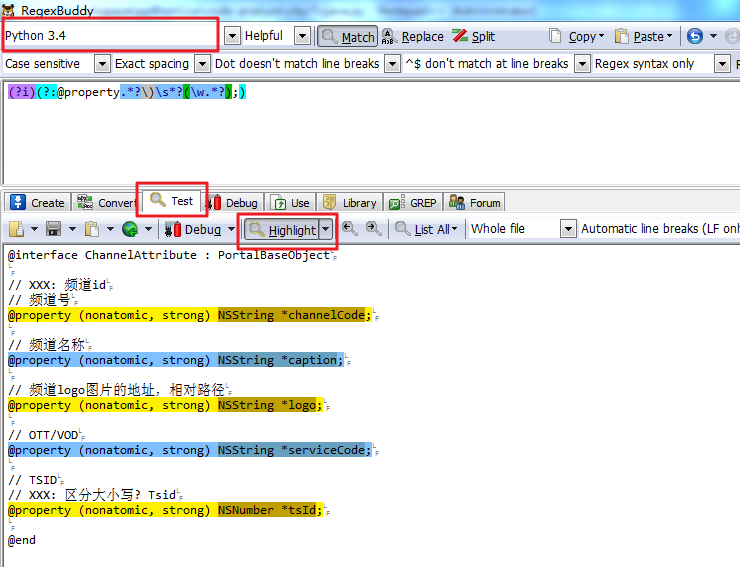

本章主要根据 “python manual”(在安装python后附带)中的Tutorial简化整理而来。有时间可以查看官方原来的文档。遇到模块或函数不清楚的也可以查找Manual。
和大多数动态语言一样，python中的变量是动态变量，所以定义时不需要指定变量类型，只跟实际赋值时有关(python的所有变量都是对象)。
数字的使用跟数学表达式一样:
>>> (50-5*6)/4 # 数学表达式
5
>>> 7/3 # 默认返回floor
2
>>> 7/-3
-3
>>> 7/3.0 # 浮点数
2.3333333333333335
变量赋值:
>>> width = 20
>>> x = y = z = 10 # 变量可以同时赋值
>>> x,y = 100,200 # 多个赋值
>>> print x, y
100 200
进制转换:
>>> a=100
>>> hex(a) # 十六进制
'0x64'
>>> oct(a) # 八进制
'0144'
ascii码转换:
>>> ord('a') # 字母转数值
97
>>> chr(97) # 数值转字母
'a'
python通过单引号、双引号或三重引号引起来的表示字符串。在这里，使用单引号和双引号完全是一样的，使用单引号做引用，字串中可以双引号字符；使用双引号，字串中可以包含单引号，否则，需要加转义字符:
>>> 'doesn\'t'
"doesn't"
>>> "doesn't"
"doesn't"
>>> '"Yes," he said.'
'"Yes," he said.'
>>> "\"Yes,\" he said."
'"Yes," he said.'
>>> '"Isn\'t," she said.'
'"Isn\'t," she said.'
跨行引用，则需要和用 \n 和 \ 连接字符:
>>> print "Usage: thingy [OPTIONS]\n\
-h Display this usage message\n\
-H hostname Hostname to connect to"
Usage: thingy [OPTIONS]
-h Display this usage message
-H hostname Hostname to connect to
使用三重引号，""" 或 ''' ，可以更方便地跨行字串:
>>> print """
Usage: thingy [OPTIONS]
-h Display this usage message
-H hostname Hostname to connect to
"""
Usage: thingy [OPTIONS]
-h Display this usage message
-H hostname Hostname to connect to
原始字符串，通过在字符串前面加字母r，表示字串是raw string，不会对字串中的字符进行转义:
>>> print r"""aaaaaaaa\nbbbb"""
aaaaaaaa\nbbbb
字符串可以通过+号进行连接，通过*号进行重复:
>>> word = 'Help' + 'A'
>>> word
'HelpA'
>>> '<' + word*5 + '>'
'<HelpAHelpAHelpAHelpAHelpA>'
字串采用和C的一样的索引方式，下标从0开始。同时，子串可以使用分片的记法，冒号左边为开始字符的下标，右边为结束字符下标+1:
>>> word[4]
'A'
>>> word[0:2]
'He'
>>> word[2:4]
'lp'
分片记法还用两个方便的默认值，左边默认为0，右边默认为整个字符串长度:
>>> word[:2] # The first two characters
'He'
>>> word[2:] # Everything except the first two characters
'lpA'
分片记法，还可以使用负数下标，表示:
>>> word[-1] # The last character
'A'
>>> word[-2] # The last-but-one character
'p'
>>> word[-2:] # The last two characters
'pA'
>>> word[:-2] # Everything except the last two characters
'Hel'
取子字符串时，如果超过范围，会被自动截取:
>>> word[-100:200]
'HelpA'
字符串还可以步进式地截取字符。如:
>>> word[::2]
'HlA
>>> word[::-1] # 倒序输出
'ApleH'
上面主要介绍字符串的截取和拼接，字符串其他常用操作如下:
去左右空白字符或特殊字符:
>>> " aaaa ".strip() # 去左右空白字符
aaaa
>>> " aaaa ".rstrip() # lstrip去左侧空格,rstrip去右侧空格
aaaa
>>> " aaaa,,,...".rstrip(',.!') # 去指定字符
' aaaa'
取字符串长度:
>>> len(word)
5
定位字符或子串:
>>> "aaabbbccc".index('bb')
3
>>> "aaabbbccc".index('bc')
5
比较字符串:
>>> cmp('aa','bb')
-1
>>> cmp('aa','aa')
0
>>> cmp('bb','aa')
1
字符串大小写转换:
>>> 'aaa'.upper()
'AAA'
>>> 'Aaaa'.lower()
'aaaa'
字符串查找:
>>> 'aaabbbccc'.find('bbb')
3
Note
index如果没找到会抛出异常，find没找到返回-1
字符串替换:
>>> "aaabbbaaadddd".replace('a', 'e')
'eeebbbeeedddd'
>>> "aaabbbaaadddd".replace('aaa', 'e')
'ebbbedddd'
字符串分割:
>>> "aaaaa;;bbb;;ccc;ddd;".split(';;')
['aaaaa', 'bbb', 'ccc;ddd;'] # 字符串数组
>>> "aaaaa;bbb;ccc;ddd;".split(';')
['aaaaa', 'bbb', 'ccc', 'ddd', '']
合并字符串:
>>> ''.join(['aaaa', 'bbb', 'ccc'])
'aaaabbbccc'
>>> ';'.join(['aaaa', 'bbb', 'ccc'])
'aaaa;bbb;ccc'
Note
python的字符串是不可修改的。如修改一个字符，应使用replace，或使用左边字串+新字符+右边字串拼接而成
python使用如下语法定义list，list的元素类型可以不一样:
>>> a = ['spam', 'eggs', 100, 1234]
>>> a
['spam', 'eggs', 100, 1234]
list访问的分片记法与字符串相似，而且一样使用+进行连接，* 进行重复:
>>> a[1:-1]
['eggs', 100]
>>> a[:2] + ['bacon', 2*2]
['spam', 'eggs', 'bacon', 4]
>>> 3*a[:3] + ['Boo!']
['spam', 'eggs', 100, 'spam', 'eggs', 100, 'spam', 'eggs', 100, 'Boo!']
与字符串不同，python的list是可以修改的:
>>> letters = ['a', 'b', 'c', 'd', 'e', 'f', 'g']
>>> # replace some values
>>> letters[2:5] = ['C', 'D', 'E']
>>> letters
['a', 'b', 'C', 'D', 'E', 'f', 'g']
>>> # now remove them
>>> letters[2:5] = []
>>> letters
['a', 'b', 'f', 'g']
返回list大小:
>>> a = ['a', 'b', 'c', 'd']
>>> len(a)
4
list可以嵌套，构造多维数组:
>>> p=['a', 'b']
>>> p2=['a', p, 'b']
>>> p2
['a', ['a', 'b'], 'b']
list其他常用操作:
Note
注意append和+的区别，append一个数组，是把数组当成一个元素添加进去，+数组是把所有元素添加进去
list还提供了一种叫做 list comprehensions 方法可以从一个list产生新的list，它参照了函数式编程中的filter-map-reduce的思想[参考第5章]:
>>> l=range(10)
>>> l
[0, 1, 2, 3, 4, 5, 6, 7, 8, 9]
>>> [x**2 for x in l if x%2] # 返回list中奇数的平方
[1, 9, 25, 49, 81]
tuple由多个值和逗号组成，前后可加括号，也可以不加:
>>> t = 12345, 54321, 'hello!'
>>> t[0]
12345
>>> t
(12345, 54321, 'hello!')
>>> (a,b) = (2, 3)
>>> c,d = 1, (2, 3)
>>> len(d)
2
与list不同，tuple是不可修改的，所以不能修改tuple中的数据。tuple一般在赋值、打印或pack,unpack时使用。tuple打印的例子:
>>> print "Hello, %s, %s, %s" % ('1', '2', '3') #此时tuple需要加()否则语法错误
set是无序的，元素不重复的collection。主要用于成员检测和消除重复元素。集合可以由大括号、数组、字符串来生成。集合还支持并集、交集、差集等操作:
>>> a={1, 2, 2, 2, 3}
>>> a
set([1, 2, 3])
>>> set(['1','2','2','3'])
set(['1', '3', '2'])
>>> 'orange' in fruit # fast membership testing
True
>>> # Demonstrate set operations on unique letters from two words
...
>>> a = set('abracadabra')
>>> b = set('alacazam')
>>> a # unique letters in a
set(['a', 'r', 'b', 'c', 'd'])
>>> a - b # letters in a but not in b
set(['r', 'd', 'b'])
>>> a | b # letters in either a or b
set(['a', 'c', 'r', 'd', 'b', 'm', 'z', 'l'])
>>> a & b # letters in both a and b
set(['a', 'c'])
>>> a ^ b # letters in a or b but not both
set(['r', 'd', 'b', 'm', 'z', 'l'])
dictionary是无序的，键值对集合:
>>> tel = {'jack': 4098, 'sape': 4139}
>>> tel['guido'] = 4127
>>> tel
{'sape': 4139, 'guido': 4127, 'jack': 4098}
>>> tel['jack']
4098
>>> del tel['sape']
>>> tel['irv'] = 4127
>>> tel
{'guido': 4127, 'irv': 4127, 'jack': 4098}
>>> tel.keys()
['guido', 'irv', 'jack']
>>> 'guido' in tel
True
>>> dict([('sape', 4139), ('guido', 4127), ('jack', 4098)])
{'sape': 4139, 'jack': 4098, 'guido': 4127}
如果key是简单的字符串， dict也可以这样构造:
>>> dict(sape=4139, guido=4127, jack=4098)
{'sape': 4139, 'jack': 4098, 'guido': 4127}
Note
del操作可用于list, set, dictionary等可变的结构中，用于删除元素
其他类型还有
python中的表达式有以下特点:
语句不需要以 ; 结束，不同的语句需要换行
语法块(if,while,for,defun,class等)不是通过加大括号来确定范围，而是用:加对代码对齐的方式来确定，python通过语法强制对齐的方式，让代码更可读，如下面if代码块的例子:
>>> # 加:，程序块多条语句用tab或空格对齐
>>> if 1>2:
print '1'
print '2'
>>> # 没对齐导致语法错误
>>> if 1>2:
print '1'
print '2'
File "<pyshell#38>", line 3
print '2'
^
IndentationError: unexpected indent
通过#号进行注释
空语句 pass
条件判断语法很简单，if...elif...else，如下:
>>> x = int(raw_input("Please enter an integer: "))
Please enter an integer: 42
>>> if x < 0:
print 'Negative'
elif x == 0:
print 'Zero'
else:
print 'Positive'
Positive
条件除了比较，还可以是一些操作。in和not in用来判断元素是否在序列中(list,tuple,set,string,dictionary等), is和not is用来判断元素是否是相同的对象:
>>> '1' in ['1', '2', '3']
True
>>> '1' in ('1','2','3')
True
>>> '1' in {'1','2','3'}
True
>>> '1' in {'1':1, '2':1}
True
对对象的判断，如果对象不是None类型的，就返回True:
>>> if not None:
print "It's True"
It's True
复合条件有not, and, or, not的优先级最高, or的优先级最低, and和or的求值是采用正则序的，即从左到右判断条件，有需要判断时才会对某个条件表达式进行求值，and时一旦有个条件为False，或or时一旦有条件为True，后面的条件判断不会进行下去了。and或or的返回值是最后一个进行求值的条件表达式值:
>>> string1, string2, string3 = '', 'Trondheim', 'Hammer Dance'
>>> non_null = string1 or string2 or string3
>>> print non_null
Trondheim
Note
不像c语言，python无法在条件判断中赋值。这样可以避免==和=易写错的情况
使用while进行迭代, continue, break等用法与C类似:
i=0
while i<3:
if i%2:
print 'Odd:%d' % i
else:
pass
i=i+1
while中的条件表达式与if中的相同。
使用for进行迭代，一般使用for...in sequence的语法，sequence可以是list,dictionary等:
>>> a = ['Learn', 'python']
>>> for i in range(len(a)):
print i, a[i]
0 Learn
1 python
>>> for v in a:
print v
>>> d={'a':100, 'b':200}
>>> for key,value in d.items():
print key,value
range用于生成list，一般用于遍历:
>>> range(10)
[0, 1, 2, 3, 4, 5, 6, 7, 8, 9]
>>> range(1, 11)
[1, 2, 3, 4, 5, 6, 7, 8, 9, 10]
>>> range(0, 30, 5)
[0, 5, 10, 15, 20, 25]
>>> range(0, 10, 3)
[0, 3, 6, 9]
>>> range(0, -10, -1)
[0, -1, -2, -3, -4, -5, -6, -7, -8, -9]
上面还提到, list等sequence一般都提供了comprehensions，使用for和表达式生成新的sequence:
>>> [x**3 for x in range(1,3)]
[1, 8]
>>> [(x, y**3) for x in range(1,3) for y in range(1,3)] # 两层循环
[(1, 1), (1, 8), (2, 1), (2, 8)]
>>> {x: x**2 for x in (2, 4, 6)}
{2: 4, 4: 16, 6: 36}
>>> a = {x for x in 'abracadabra' if x not in 'abc'}
>>> a
set(['r', 'd'])
使用def关键字定义函数，函数的参数，返回值与C类似, return语句没带值返回None，没有return语句，也返回None:
>>> def fib2(n): # return Fibonacci series up to n
"""Return a list containing the Fibonacci series up to n."""
result = []
a, b = 0, 1
while a < n:
result.append(a) # see below
a, b = b, a+b
return result
>>> f100 = fib2(100) # call it
>>> f100 # write the result
[0, 1, 1, 2, 3, 5, 8, 13, 21, 34, 55, 89]
函数和C++一样，可以带默认参数。默认参数可以是当前已知的变量:
i=5
def f(arg=i):
print arg
f()
i = 6
f()
默认参数只求值一次，所以上面两个f调用产生的结果一致.
参数还可以使用keyword的方式赋值:
def parrot(voltage, state='a stiff', action='voom', type='Norwegian Blue'):
print "-- This parrot wouldn't", action,
print "if you put", voltage, "volts through it."
print "-- Lovely plumage, the", type
print "-- It's", state, "!"
parrot(1000) # 1 positional argument
parrot(voltage=1000) # 1 keyword argument
parrot(voltage=1000000, action='VOOOOOM') # 2 keyword arguments
parrot(action='VOOOOOM', voltage=1000000) # 2 keyword arguments
parrot('a million', 'bereft of life', 'jump') # 3 positional arguments
parrot('a thousand', state='pushing up the daisies') # 1 positional, 1 keyword
注意下面几种情况是非法的:
parrot() # required argument missing
parrot(voltage=5.0, 'dead') # non-keyword argument after a keyword argument
parrot(110, voltage=220) # duplicate value for the same argument
parrot(actor='John Cleese') # unknown keyword argument
函数支持变参, 定义函数时，一个 * 号是多个参数列表, 两个 * 号参数按字典解析:
def cheeseshop(kind, *arguments, **keywords):
print "-- Do you have any", kind, "?"
print "-- I'm sorry, we're all out of", kind
for arg in arguments:
print arg
print "-" * 40
keys = sorted(keywords.keys())
for kw in keys:
print kw, ":", keywords[kw]
cheeseshop("Limburger", "It's very runny, sir.",
"It's really very, VERY runny, sir.",
shopkeeper='Michael Palin',
client="John Cleese",
sketch="Cheese Shop Sketch")
它将打印:
-- Do you have any Limburger ?
-- I'm sorry, we're all out of Limburger
It's very runny, sir.
It's really very, VERY runny, sir.
----------------------------------------
client : John Cleese
shopkeeper : Michael Palin
sketch : Cheese Shop Sketch
调用函数时，也可以使用类似的 * 号标记来unpack参数列表或字典:
>>> range(3, 6) # normal call with separate arguments
[3, 4, 5]
>>> args = [3, 6]
>>> range(*args) # call with arguments unpacked from a list
[3, 4, 5]
unpack字典参数:
>>> def parrot(voltage, state='a stiff', action='voom'):
... print "-- This parrot wouldn't", action,
... print "if you put", voltage, "volts through it.",
... print "E's", state, "!"
...
>>> d = {"voltage": "four million", "state": "bleedin' demised", "action": "VOOM"}
>>> parrot(**d)
-- This parrot wouldn't VOOM if you put four million volts through it. E's bleedin' demised !
小的匿名函数可以使用lambda表达式代替(lambda表达式是函数式编程中的重要思想):
>>> def make_incrementor(n):
return lambda x: x + n
>>> f = make_incrementor(42)
>>> f(0)
42
>>> f(1)
43
上面使用lambda返回一个函数，另一种表示是把lambda函数当参数:
>>> pairs = [(1, 'one'), (2, 'two'), (3, 'three'), (4, 'four')]
>>> pairs.sort(key=lambda pair: pair[1])
>>> pairs
[(4, 'four'), (1, 'one'), (3, 'three'), (2, 'two')]
Note
语言如果使用lambda，一般都要涉及局部变量(状态)，函数作为参数等概念，在一些函数式编程语言中，函数只是lambda的语法糖，即函数只是命了名的lambda表达式。
在sicp中提到可以使用过程来代替数据结构，来达到代码和数据的优雅统一。如:
#使用过程来代替数据结构--序对
def cons(x,y):
return lambda m: m and x or y
#取第一个数
def car(z):
return z(1)
# 取第二个数
def cdr(z):
return z(0)
d=cons(100, cons(1000, 10000))
print car(d), car(cdr(d)), cdr(cdr(d))
上面例子中，通过使用返回的lambda，定义了序对数据结构，通过cons构造，car和cdr来取序对的值，从而实现了一个基础的 数据结构(lisp系的数据全是基于list的，而list又可以用序列表示)，而不用任何定义结构体的语句(这就是函数式编程语法简单的一个例子)。
python支持自省，就是说可以在函数，类的定义中加入文档:
>>> def my_function():
... """Do nothing, but document it.
...
... No, really, it doesn't do anything.
... """
... pass
...
>>> print my_function.__doc__
Do nothing, but document it.
No, really, it doesn't do anything.
python中每个py文件就是一个模块。每个模块中有个全局变量__name__标志模块名。在别的模块调用一个模块时，使用import语法，如在fibo.py中输入以下函数:
def fib(n): # write Fibonacci series up to n
a, b = 0, 1
while b < n:
print b,
a, b = b, a+b
def fib2(n): # return Fibonacci series up to n
result = []
a, b = 0, 1
while b < n:
result.append(b)
a, b = b, a+b
return result
然后，在另一个文件可以这样调用:
import fibo
fibo.fib(1000)
import还存在另一种写法, 它把函数直接导入发起导入的模块的符号表中:
>>> from fibo import fib, fib2
>>> fib(500) # 不需要再加模块名了
1 1 2 3 5 8 13 21 34 55 89 144 233 377
或者全部导入:
>>> from fibo import *
>>> fib(500)
1 1 2 3 5 8 13 21 34 55 89 144 233 377
当你使用:
python fibo.py <arguments>
时，__name__被自动设置为”__main__”，所以你可以在py中加入如下的判断:
if __name__ == "__main__":
import sys
fib(int(sys.argv[1]))
那么py即可以直接调用，也可以在别的模块中被引用。
python的模块搜索目录存在sys.path变量中，默认值包括三个:
>>> import sys
>>> print sys.path
['', 'C:\\Python27\\Lib\\idlelib', 'C:\\Python27\\lib\\site-packages\\setuptools-14.0-py2.7.egg', 'C:\\Python27\\lib\\site-packages\\sphinx-1.3b3-py2.7.egg', 'C:\\Python27\\lib\\site-packages\\colorama-0.3.3-py2.7.egg', 'C:\\Python27\\lib\\site-packages\\sphinx_rtd_theme-0.1.6-py2.7.egg', 'C:\\Python27\\lib\\site-packages\\alabaster-0.7.1-py2.7.egg', 'C:\\Python27\\lib\\site-packages\\babel-1.3-py2.7.egg', 'C:\\Python27\\lib\\site-packages\\pytz-2014.10-py2.7.egg', 'C:\\Python27\\lib\\site-packages\\pip-6.0.8-py2.7.egg', 'C:\\Windows\\system32\\python27.zip', 'C:\\Python27\\DLLs', 'C:\\Python27\\lib', 'C:\\Python27\\lib\\plat-win', 'C:\\Python27\\lib\\lib-tk', 'C:\\Python27', 'C:\\Python27\\lib\\site-packages']
>>> sys.path.append('/ufs/guido/lib/python')
使用dir来获取模块信息
>>> import fibo, sys
>>> dir(fibo)
['__name__', 'fib', 'fib2']
>>> dir(sys)
['__displayhook__', '__doc__', '__excepthook__', '__name__', '__package__',
'__stderr__', '__stdin__', '__stdout__', '_clear_type_cache',
'_current_frames', '_getframe', '_mercurial', 'api_version', 'argv',
'builtin_module_names', 'byteorder', 'call_tracing', 'callstats',
'copyright', 'displayhook', 'dont_write_bytecode', 'exc_clear', 'exc_info',
'exc_traceback', 'exc_type', 'exc_value', 'excepthook', 'exec_prefix',
'executable', 'exit', 'flags', 'float_info', 'float_repr_style',
'getcheckinterval', 'getdefaultencoding', 'getdlopenflags',
'getfilesystemencoding', 'getobjects', 'getprofile', 'getrecursionlimit',
'getrefcount', 'getsizeof', 'gettotalrefcount', 'gettrace', 'hexversion',
'long_info', 'maxint', 'maxsize', 'maxunicode', 'meta_path', 'modules',
'path', 'path_hooks', 'path_importer_cache', 'platform', 'prefix', 'ps1',
'py3kwarning', 'setcheckinterval', 'setdlopenflags', 'setprofile',
'setrecursionlimit', 'settrace', 'stderr', 'stdin', 'stdout', 'subversion',
'version', 'version_info', 'warnoptions']
python的捕获异常语法，如下例子:
try:
code_block()
except SomeException, e:
do_some_thing_with_exception(e)
except (Exception1, Exception2), e:
do_some_thing_with_exception(e)
except:
do_some_thing_with_other_exceptions()
else:
do_some_thing_when_success()
finally:
do_some_thing()
其中，except可以使用else分支，来匹配try运行无异常的情况, finally是不管有无异常都会执行。
Note
python2.7.x和python3.x的异常语法不太一样。
python使用raise来抛出异常:
try:
raise NameError, 'HiThere'
except NameError, a:
print 'An exception flew by!'
print type(a)
raise 函式的第一个参数是异常名，第二个是这个异常的实例，它存储在 instance.args 的参 数中。和 except NameError, a: 中的第二个参数意思差不多。
异常类中可以定义任何其他类中可以定义的东西，但是通常为了保持简单，只在其中加 入几个属性信息，以供异常处理句柄提取:
class MyError(Exception):
def __init__(self, value):
self.value = value
def __str__(self):
return repr(self.value)
try:
raise MyError(2*2)
except MyError, e:
print 'My exception occurred, value:', e.value
如果一个新创建的模块中须抛出几种不同的错误时，一个通常的做法是为该模块定义一个异常基类，然后针对不同的错误类型派生出对应的异常子类。
一个简单的例子如下:
>>> class MyClass:
"""A simple class.""" #__doc__
i=10000
def __init__(self, p1, p2): # 构造函数
self.r = p1
self.i = p2
def f(self):
print self.r+self.i
>>> x = MyClass(3.0, -4.5) # 实例化
>>> x.r, x.i
(3.0, -4.5)
>>> x.f()
-1.5
需要注意的是，定义一个类时，python会产生一个类对象。类对象中属性、函数可以修改:
>>> del MyClass.i
>>> del MyClass.f
>>> MyClass.j=10000
类对象中可以使用 __doc__打印类定义中的帮助字符串
实例化类的后，就产生了一个实例对象。实例对象中的属性也可以修改，如上面MyClass对象 没有定义j属性，但是在它赋值时会自动创建一个:
>>> x.j = 1000
>>> del x.j
实例对象中的函数和MyClass中的函数看起来不太一样。大家注意到类对象中定义函数时第一 个参数总是self，而调用实例对象中的函数时，可以少加一个参数，事实上如下的调用是完全等价的:
>>> x.f()
-1.5
>>> MyClass.f(x)
-1.5
类变量和实例变量:
>>> class Dog:
kind = 'canine' # 类变量，被所有实例共享
def __init__(self, name):
self.name = name # 实例变量
# self.__class__.kind = 'bbb' # 修改类变量
>>> d = Dog('Fido')
>>> e = Dog('Buddy')
>>> print d.kind, e.kind, Dog.kind
canine canine canine
>>> e.kind = 'bbbb' # 注意kind已经变成e的实例变量
>>> print d.kind, e.kind, Dog.kind # d中没有kind实例变量，所以d.kind还是类中的变量
canine bbbb canine
>>> Dog.kind = 'kkkk'
>>> print d.kind, e.kind, Dog.kind
kkkk bbbb kkkk # d.kind仍与Dog.kind一样
使用如下语法继承或多重继承:
class DerivedClassName(BaseClassName1, BaseClassName2):
<statement-1>
.
.
.
<statement-N>
子类中可以使用 BaseClassName.methodname(self, arguments) 调用父类的方法
python 还提供两个函数用于实例检查:
多重继承时，规则是深度优先，从左到右。如下面的例子，搜索一个变量是否存在时，顺序是DerivedClassName 然后是BaseClassName1，BaseClassName1的父类，BaseClassName2等。
一个变量前面以及下划线开始会被当成私有变量，不管它是函数还是属性。
threading 模块主要功能是让一些线程的操作对象化了，创建了叫 Thread 的类。 使用线程有两种方法:
1 2 3 4 5 6 7 8 9 10 11 12 13 14 15 16 17 18 19 20 21 22 23 24 25 26 27 28 29 30 31 32 33 34 35 36 37 38 | # -*- coding: utf-8 -*-
import string, threading, time
def thread_main(a):
global count, mutex
# 获得线程名
threadname = threading.currentThread().getName()
for x in xrange(0, int(a)):
# 取得锁
mutex.acquire()
count = count + 1
print threadname, x, count
# 释放锁
mutex.release()
time.sleep(1)
def main(num):
global count, mutex
threads = []
count = 1
# 创建一个锁
mutex = threading.Lock()
# 先创建线程对象
for x in xrange(0, num):
threads.append(threading.Thread(target=thread_main, args=(5,)))
# 启动所有线程
for t in threads:
t.start()
# 主线程中等待所有子线程退出
for t in threads:
t.join()
if __name__ == '__main__':
num = 2
# 创建2个线程
main(num)
|
1 2 3 4 5 6 7 8 9 10 11 12 13 14 15 16 17 18 19 20 21 22 23 24 25 26 27 28 29 30 31 32 33 34 35 36 37 38 | # -*- coding: utf-8 -*-
import threading
import time
class Test(threading.Thread):
def __init__(self, num):
threading.Thread.__init__(self)
self._run_num = num
def run(self):
global count, mutex
threadname = threading.currentThread().getName()
for x in xrange(0, int(self._run_num)):
# 取得锁
mutex.acquire()
count = count + 1
print threadname, x, count
# 释放锁
mutex.release()
time.sleep(1)
if __name__ == '__main__':
global count, mutex
threads = []
num = 2
count = 1
# 创建锁
mutex = threading.Lock()
# 创建线程对象
for x in xrange(0, num):
threads.append(Test(5))
# 启动线程
for t in threads:
t.start()
# 等待子线程结束
for t in threads:
t.join()
|
上述输出类似:
mymac:code vincent$ python threading_1.py
Thread-1 0 2
Thread-2 0 3
Thread-1 1 4
Thread-2 1 5
Thread-1 2 6
Thread-2 2 7
Thread-1 3 8
Thread-2 3 9
Thread-1 4 10
Thread-2 4 11
文件路径
os.path 是一个与平台无关的文件路径处理模块。它可以帮助我们解决在程序处理中碰到 的一些复杂的路径处理问题，我们用简单的字符串拆分这些路径处理问题是很困难或者无法完成的，但是 os.path 都替你做好了解决方案，你只须使用 它里面的函式就可以了。
目录操作
目录操作，一般使用os模块和shutil模块:
# 存在目录，删除原来目录，重新创建目录
if os.path.isdir(gDstDir):
shutil.rmtree(gDstDir)
os.makedirs(gDstDir);
# 遍历目录、文件，取java文件
for root, dirs, files in os.walk(gSrcDir):
for nd in [root+os.sep+d for d in dirs]:
print "dir: %s" % nd
for nf in [root+os.sep+f for f in files if f.endswith(".java")]:
print "file: %s" %nf
文件复制、删除
文件操作也使用os模块和shutil:
>>> shutil.copyfile('data.db', 'archive.db')
>>> shutil.move('/build/executables', 'installdir')
>>> os.remove('data.db')
文件读写
文件读写与c中类似:
# 读取全部内容
content = open(sf,'r').read()
# 按行读
lines = open(sf,'r').readlines()
for l in lines:
print l
# 写入文件
ofd = open(df, 'w')
ofd.write('aaa')
ofd.close()
1 2 3 4 5 6 7 8 9 10 11 12 13 14 15 16 17 18 19 20 21 22 23 24 25 26 27 28 29 30 31 32 | #coding:utf-8
'''
Created on 2013-10-21
@author: vincent
'''
import socket
import time
from threading import Thread,Lock
class SocketThread(Thread):
def __init__(self):
print 'geturllwork\r\n'
Thread.__init__(self)
def run(self):
sock = socket.socket(socket.AF_INET, socket.SOCK_STREAM)
sock.connect(('192.168.2.119', 8001))
time.sleep(2)
sock.send('aaaaaaaaa')
print sock.recv(1024)
sock.close()
time.sleep(1)
if __name__ == '__main__':
dealUrlThreads=[]
for i in xrange(10000):
dealUrlThreads.append(SocketThread())
dealUrlThreads[i].start()
for t in dealUrlThreads:
t.join()
|
1 2 3 4 5 6 7 8 9 10 11 12 13 14 15 16 17 18 19 20 21 22 23 24 25 | #coding:utf-8
'''
Created on 2013-10-21
@author: vincent
'''
import socket
if __name__ == '__main__':
sock = socket.socket(socket.AF_INET, socket.SOCK_STREAM)
sock.bind(('localhost', 8001))
sock.listen(5)
while True:
connection,address = sock.accept()
try:
connection.settimeout(5)
buf = connection.recv(1024)
if buf == '1':
connection.send('welcome to server!')
else:
connection.send('please go out!')
except socket.timeout:
print 'time out'
connection.close()
|
1 2 3 4 5 6 7 8 9 10 11 12 13 14 15 16 17 18 19 20 21 22 23 24 25 26 27 28 29 30 31 32 33 34 35 36 | #coding:utf-8
'''
Created on 2013-10-21
@author: vincent
'''
import sys,socket
host = sys.argv[1]
textport = sys.argv[2]
s = socket.socket(socket.AF_INET, socket.SOCK_DGRAM)
#s.bind(('', 54320))
try:
port = int(textport)
except ValueError:
port = socket.getservbyname(textport, 'udp')
s.connect((host, port))
while 1:
#print "Enter data to transmit:"
#data = sys.stdin.readline().strip()
data = 'mydata'
s.sendall(data)
print "Looking for replies; press Ctrl-C or Ctrl-Break to stop."
buf = s.recv(2048)
#buf = s.recvfrom()
if not len(buf):
break
print "Server replies: ",
sys.stdout.write(buf)
print "\n"
|
1 2 3 4 5 6 7 8 9 10 11 12 13 14 15 16 17 18 19 20 21 22 23 24 25 | #coding:utf-8
'''
Created on 2013-10-21
@author: vincent
'''
import socket, traceback
host = ''
port = 54321
s = socket.socket(socket.AF_INET, socket.SOCK_DGRAM)
s.setsockopt(socket.SOL_SOCKET, socket.SO_REUSEADDR, 1)
s.bind((host, port))
while 1:
try:
message, address = s.recvfrom(2048)
print "Got data from", address, ": ", message+".echo"
s.sendto(message, address)
except (KeyboardInterrupt, SystemExit):
raise
except:
traceback.print_exc()
|
正则表达式语法
python使用的是perl系的正则表达式语法。具体语法可以查看python文档中的re模块，这里只列表常见的
正则表达式工具(RegexBuddy)
复杂的正则表达式可能很容易写错，可以借助正则表达式工具进行测试，推荐regexbuddy，下图所示了使用regexbuddy测试，匹配objective-c中类中属性的正则表达式。
使用正则表达式进行匹配
上面介绍了正则的语法，还有测试正则语法的工具。下面介绍python下如果使用正则匹配，并获取匹配的结果
从string中查找pattern,如果符合pattern,则返回一个match的对象,否则返回None
match与search类似，只不过它是判断整个字符串是否匹配:
>>> import re
>>> p='a{3}'
>>> re.search(p,'bbbbaaaddd')
<_sre.SRE_Match object at 0x01DF7950>
>>> re.match(p, 'bbbbaaaddd')
>>> re.match('\w*', 'bbbbaaaddd')
<_sre.SRE_Match object at 0x01DF79C0>
match对象的group, groups函数可以获取捕获的group信息:
>>> p='''(\w*(a{3})\w*(\1))'''
>>> gg=re.match(p,'bbbbaaadddaaa')
>>> gg.group()
'bbbbaaaddd'
>>> gg.groups()
('bbbbaaaddd', 'aaa')
经常使用的正则模式，可以使用compile，提高效率
findall从正则中获取匹配后的group，一般比较实用，如上面获取属性的例子:
import re
# 一般加re.S表示.也可以匹配\n
pp = re.compile(r'''(?i)(?:@property.*?\)\s*?(\w.*?);)''', re.S)
test=r"""
@interface ChannelAttribute : PortalBaseObject
// XXX: 频道id
// 频道号
@property (nonatomic, strong) NSString *channelCode;
// 频道名称
@property (nonatomic, strong) NSString *caption;
// 频道logo图片的地址，相对路径
@property (nonatomic, strong) NSString *logo;
// OTT/VOD
@property (nonatomic, strong) NSString *serviceCode;
"""
propertys = re.findall(pp, test)
for p in propertys:
print p
上述例子将输出该类的所有属性:
NSString *channelCode
NSString *caption
NSString *logo
NSString *serviceCode
把符合pattern的部分替换成repl，repl可以是新字符串，或者更复杂的函数:
>>> t="111 222 333"
>>> re.sub('\d*(?=\s|$)', '444', t)
'444 444 444'
def add100(matched):
intStr = matched.groups()[0]
intValue = int(intStr)
return str(intValue+100)
# 匹配的数全部替换成+100
>>> re.sub('(\d*)(?=\s|$)', add100, t)
'211 322 433'
使用命令行，经常要复杂的参数。可以使用OptionParser库，如有下列格式的参数:
epgTool [-f <filename>][-D <dirpath>][-d <date>]
则可以使用OptionParser解析如下:
from optparse import OptionParser
from datetime import *
MSG_USAGE = "epgTool [-f <filename>][-D <dirpath>][-d <date>]"
optParser = OptionParser(MSG_USAGE)
optParser.add_option("-f","--file",action = "store",type="string",dest = "filename")
optParser.add_option("-D","--dir",action = "store",type="string",dest = "dir")
optParser.add_option("-d","--date",action = "store",type="string",dest = "date")
options, args = optParser.parse_args()
# 解析后，-f, -D, -d 后面跟的参数，存到下面变量中
print options.filename, options.dir, options,date
if len(sys.argv)<=1:
optParser.print_help()
exit()
elif options.filename == None and options.dir==None:
optParser.print_help()
exit()
if options.date == None:
day = date.today()
else:
day = datetime.strptime(options.date,dateFmt).date()
if day == None:
print 'error: day format must like: 14/05/20'
exit()
curl库是c下的用来发http请求的工具，python下有对应的实现pycurl，安装方法仍使用pip，简单的使用例子如下:
1 2 3 4 5 6 7 8 9 10 11 12 13 14 15 16 17 18 19 20 21 22 23 24 25 26 27 28 29 30 31 32 33 34 35 36 37 38 39 40 41 42 43 44 45 46 47 48 | #encoding:utf8
'''
Created on 2011-4-28
@author: vincent
'''
import pycurl,urllib
import StringIO
# 需要伪装
def getHtmlRead(url):
c = pycurl.Curl()
c.setopt(pycurl.URL, url)
c.setopt(pycurl.USERAGENT, "Mozilla/4.0 (compatible; MSIE 6.0; "\
"Windows NT 5.1; SV1; .NET CLR 2.0.50727)")
b = StringIO.StringIO()
c.setopt(pycurl.WRITEFUNCTION, b.write)
c.setopt(pycurl.FOLLOWLOCATION, 1)
c.setopt(pycurl.MAXREDIRS, 5)
# c.setopt(pycurl.CONNECTTIMEOUT, 60)
# c.setopt(pycurl.TIMEOUT, 300)
try:
c.perform()
except Exception as e:
print "html read error\r\n"
return None
return b.getvalue()
def postHtmlRead(url,data):
c = pycurl.Curl()
c.setopt(pycurl.URL, url)
c.setopt(pycurl.USERAGENT, "Mozilla/4.0 (compatible; MSIE 6.0; "\
"Windows NT 5.1; SV1; .NET CLR 2.0.50727)")
b = StringIO.StringIO()
c.setopt(pycurl.WRITEFUNCTION, b.write)
c.setopt(pycurl.POSTFIELDS, urllib.urlencode(data))
c.setopt(pycurl.FOLLOWLOCATION, 1)
#c.setopt(pycurl.HEADER, 1)
#c.setopt(pycurl.CONNECTTIMEOUT, 0)
c.setopt(pycurl.MAXREDIRS, 5)
#c.setopt(pycurl.COOKIEJAR, "cookie.txt")
try:
c.perform()
except Exception as e:
print "html read error\r\n"
return None
return b.getvalue()
|
一般情况下，只要把脚本，或pyc文件，或zip包(2.7后才支持)发布即可。但是，对于window，由于默认没有安装python环境，如果让普通用户都去安装一个 python环境，并设置一大堆环境，可能不是很方便，这时可以考虑用python发布模块。Python发布模块有很多种，这里只介绍较早使用的py2exe，它能把py脚本， 打包成exe和python运行所有的dll文件，用户直接执行exe就行了(缺点是打包的dll文件一般都较大，能有20几M)。
安装py2exe:
easy_install py2exe
完成主功能模块后，在功能模块对应的目录下，添加setup.py，并设置类似如下:
1 2 3 4 5 6 7 8 9 10 11 12 13 14 15 16 17 18 19 20 21 22 23 24 25 26 27 | from distutils.core import setup
import py2exe
includes = ["encodings", "encodings.*"]
options = {"py2exe":
{"compressed": 1,
"optimize": 2,
"ascii": 1,
"includes":includes,
"bundle_files": 1}
}
setup(
options = options,
zipfile=None,
# The first three parameters are not required, if at least a
# 'version' is given, then a versioninfo resource is built from
# them and added to the executables.
version = "0.1.0",
description = "urlsign",
name = "urlsign",
# targets to build
# windows = ["test_wx.py"],
console = ["urlsign.py"]
# console = ["hello.py"]
)
|
在该目录,执行如下命令打包:
python setup.py py2exe
运行上面命令，全产生一个dist子目录，把该目录下的exe和一些dll文件发布即可。
{kind=link}